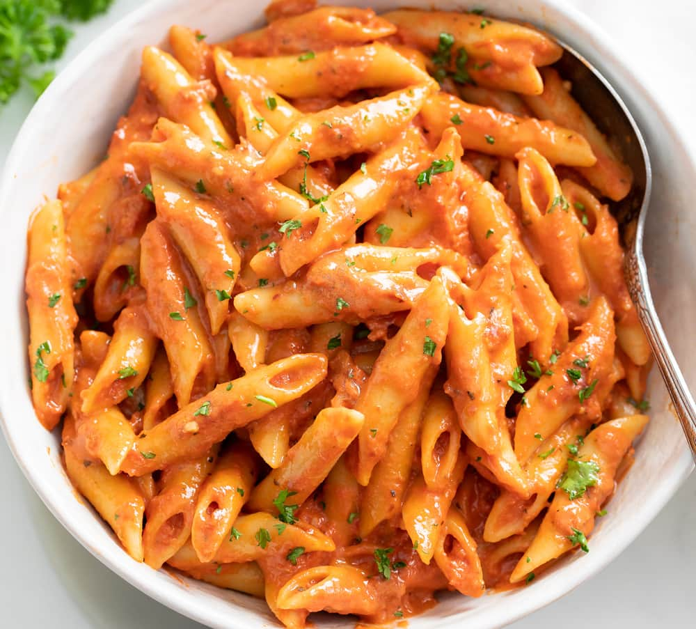

Penne Alla Vodka

Description
While some vodka sauce recipes lean on the creamy side, this version is more tomato-forward,
loaded with bits of broken-down tomatoes and onion. The tomatoes are cooked for nearly an hour
before the cream is added, concentrating their deep umami flavor. Vodka enhances the flavor of the
tomatoes, and crushed red pepper adds just a hint of heat to balance out the richness of the sauce.
Reserve some of the cooking water from the pasta to help achieve the perfect consistency in this sauce.
Ingredients
2 tablespoons olive oil
2 medium-size (8 oz.) yellow onions, finely chopped (3 cups)
2 tablespoons minced garlic (from 6 garlic cloves)
¾ teaspoon crushed red pepper
1 cup (8 oz.) vodka
2 (28-oz.) cans whole peeled plum tomatoes with juices, tomatoes finely crushed by hand
1 pound uncooked penne
1 cup heavy whipping cream
1 ¼ teaspoons kosher salt, plus more to taste
½ teaspoon black pepper
2 ½ ounces Parmesan cheese, grated on a Microplane grater (about 1 2/3 cups), divided
Steps
- Heat oil in a large Dutch oven or heavy pot over medium-high. Add onions; cook, stirring occasionally,
until tender and light golden brown, about 6 minutes. Add garlic and crushed red pepper; cook, stirring
often, until fragrant, 1 minute. Add vodka, scraping up any browned bits on bottom of pot. Cook, stirring
occasionally, until reduced by half, about 2 minutes. Add tomatoes and juices; bring to a boil over medium.
Reduce heat to medium-low; simmer, stirring occasionally, until flavors meld and sauce thickens enough that
a spoon leaves a path when drawn across the bottom of the pot, 50 to 55 minutes.
- Meanwhile, cook pasta in boiling salted water according to package directions until al dente, about 10 minutes.
Drain pasta, reserving 1 cup cooking water.
- Add cream, salt, black pepper, and 2 ounces (about 1 1/4 cups) of the cheese to tomato mixture in Dutch oven;
stir until combined and cheese is fully melted. Add cooked pasta; toss to coat in sauce. Mix in reserved pasta
cooking water 1/4 cup at a time to desired consistency.
- Divide pasta evenly among 6 bowls; sprinkle evenly with remaining 1/2-ounce (about 1/3 cup) cheese.